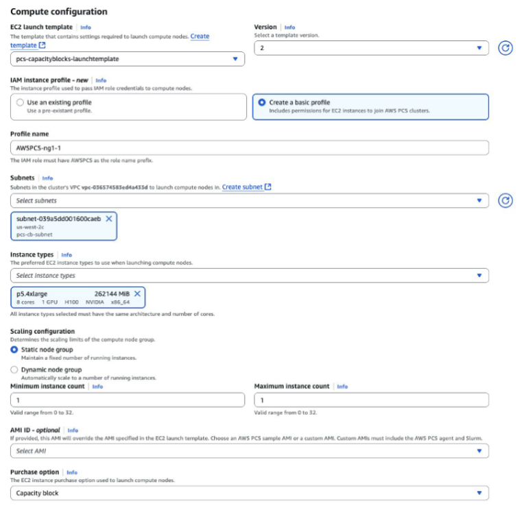
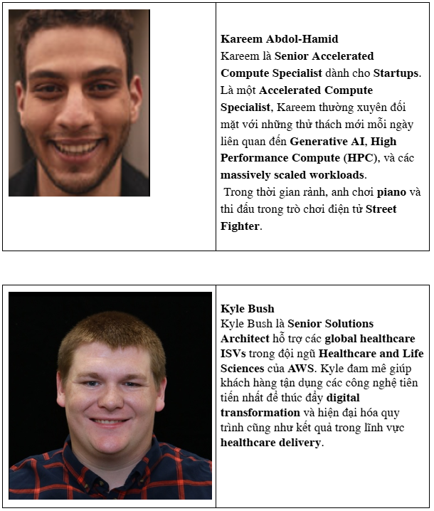

Blog 1
Announcing Capacity Blocks Support for AWS Parallel Computing Service
By Kareem Abdol-Hamid and Kyle Bush on September 18, 2025 in AWS Parallel Computing Service, Compute, High Performance Computing
This article is a contribution by Kareem Abdol-Hamid and Kyle Bush
Today, we are pleased to announce that Amazon EC2 Capacity Blocks for Machine Learning is now supported in AWS Parallel Computing Service (AWS PCS). This feature allows you to reserve and schedule Amazon EC2 accelerated GPU instances for future use, including NVIDIA Hopper GPU lines and AWS Trainium.
AWS PCS is a managed service that makes it easy for you to run and scale HPC workloads and build scientific, engineering, or AI models on AWS using Slurm. With the addition of Capacity Blocks support, organizations can now ensure reserved access to accelerated computing resources when needed most, while still maintaining the simplicity of a fully managed service with operational responsibility for cluster management, updates, and monitoring.
What are Capacity Blocks?
Capacity Blocks is an EC2 feature that allows customers to reserve accelerated instances for future use by paying upfront. You can reserve blocks from 1 to 64 instances for a maximum duration of 6 months, with the ability to renew active reservations. This is particularly useful for organizations running large-scale training or inference workloads in AI or machine learning (ML), or GPU-accelerated code such as molecular dynamics or fluid dynamics, in HPC environments.
Key Benefits
Reserved Access allows customers to reserve GPU instances up to 8 weeks in advance, ensuring resources are available for critical workloads while providing favorable pricing compared to on-demand rates. This feature fills the gap between flexible on-demand instances and long-term On-Demand Capacity Reservation (ODCR) commitments, making it ideal for customers running ML or HPC workloads that require consistent execution on powerful GPUs without long-term reservations. By allowing GPU resources to be reserved in advance, customers can maintain workflow continuity and optimize resource usage planning for scenarios such as periodic training cycles, scheduled model updates, and time-sensitive ML training jobs as well as research projects.
Flexible Scheduling allows you to reserve GPU resources immediately for urgent tasks such as optimizing real-time inference, or schedule GPU jobs in advance on PCS for planned large-scale GPU workloads. With Slurm on PCS, you can queue jobs and they will start as soon as Capacity Block instances are ready. This flexibility ensures that you can access powerful instances when you need them, for example, to quickly fine-tune and validate models, or strategically schedule upcoming heavy workloads such as distributed training across multiple GPUs. Whether you are responding to immediate modeling needs or planning for large training pipelines, the ability to switch between immediate and future reservations ensures you always have access to the computing resources you need, while maintaining cost benefits and capacity reservations.
Capacity Blocks also provides powerful resource sharing capabilities — allowing you to distribute reserved GPU instances across multiple PCS clusters. You can also combine multiple Capacity Blocks into a single large queue in PCS to maximize performance across different instance types. This helps maximize the value of reserved GPUs for diverse types of workloads or experiments. This capability also extends to sharing reserved capacity between multiple projects, ideal for organizations that want to efficiently allocate scheduled GPU resources between different initiatives or teams.
Seamless Integration delivers a seamless experience by integrating Capacity Blocks directly into PCS Compute Node Groups (CNGs) through a simple purchase option. By simply updating the launch template, you can leverage all the familiar scheduling and queue management capabilities of PCS with reserved capacity. Groups can immediately use reserved GPU access while maintaining existing ML or HPC workflows and processes, making the switch to using Capacity Blocks as simple as selecting a new purchase option.
Getting Started with Capacity Blocks in PCS
Before you get started, make sure you have created a PCS cluster (PCS cluster).
- Create or Select a Capacity Block
First, purchase your Capacity Block through the EC2 console, specifying:
- Instance type
- Number of instances (1-64)
- Duration (up to 6 months)
- Start date (up to 8 weeks in advance)

Figure 1 – EC2 Capacity Blocks requirement dialog in AWS Management Console, showing instance type, capacity, duration, and start date.
-
Create Your Launch Template
We will create a launch template through the Amazon EC2 launch templates page.
Update the instance type to match the instance type in your Capacity Block (in this case p5.4xlarge).

Figure 2 – Create Launch Template dialog in AWS Management Console EC2, showing instance type matching the instance type specified when purchasing Capacity Block.
In Network settings, specify the Availability Zone corresponding to your Capacity Block (in this case us-west-2c) and select the security group you created during the PCS cluster setup process. You can leave other configurations as default or customize as preferred – they are not required to enable Capacity Blocks.

Figure 3 – Create Launch Template dialog in AWS Management Console, showing Availability Zone matching Capacity Block’s AZ and security group matching PCS cluster’s security group.
In Advanced Details, change the purchasing option to Capacity Blocks and under Capacity Reservation, select Specify Capacity Reservation. Choose your Reservation ID. Skip remaining details in Launch Template. This is the final step to enable Capacity Blocks.

- Create Compute Node Group
In the PCS Console, create a Compute Node Group by selecting your launch template and appropriate version. Update the instance profile if needed by creating a basic profile with permissions for EC2 instances to join AWS PCS cluster. Next, select the subnet corresponding to your Capacity Block and choose the Instance Type matching your Capacity Block, for example p5.4xlarge.

Figure 5 – Create Compute Node Group dialog in AWS Management Console PCS, showing subnet matching Capacity Block’s subnet, instance type matching Capacity Block, and purchase option as “Capacity Block”.
After a few minutes, you will see your instances running in the EC2 instances dashboard. When an instance passes the status check, it is ready to use.

Figure 6 – EC2 Instances dashboard in AWS Management Console showing instance from Capacity Block launched by PCS and passed status check.
Best Practices Tips
We recommend monitoring capacity utilization when sharing Capacity Blocks across multiple services using the console or CLI.
-
To change instance type or use a new Capacity Block, create a new compute node group instead of updating the existing one. This ensures smooth transition and avoids potential disruption to workloads.
-
Plan job handling when Capacity Blocks expire: you can extend CB or alert groups through automatic EventBridge notifications. When extending CB, there is no disruption to jobs submitted to your PCS compute node group.
-
To identify expiring Capacity Blocks, note: EC2 will emit a Capacity Block Reservation Delivered event via EventBridge when a CB reservation starts, and a Capacity Block Reservation Expiration Warning 40 minutes before CB expires, with instances being reclaimed 30 minutes before CB expires. You can subscribe to these events and take appropriate action. More details are in the monitoring section of the official Capacity Blocks documentation.
-
Ensure AZ (Availability Zone) matches between Capacity Block and compute node group (see Capacity Blocks launch guide).
-
Capacity Blocks must be in scheduled or active status before connecting to PCS. If in scheduled status, PCS scheduler will keep jobs in queue until CB becomes active.
-
When creating a compute node group, note that instances will not be launched until the start time of Capacity Reservation, even if the reservation was previously active.
Availability and Pricing
PCS now supports Amazon EC2 Capacity Blocks in all AWS Regions where both services are available.
Standard pricing for PCS and Capacity Block applies. You will be charged for reserved capacity according to the EC2 Capacity Blocks pricing model, regardless of usage level.
Happy Building!
TAGS: AI, Compute, GPU, HPC, Machine Learning, Research Computing, Scientific Computing
